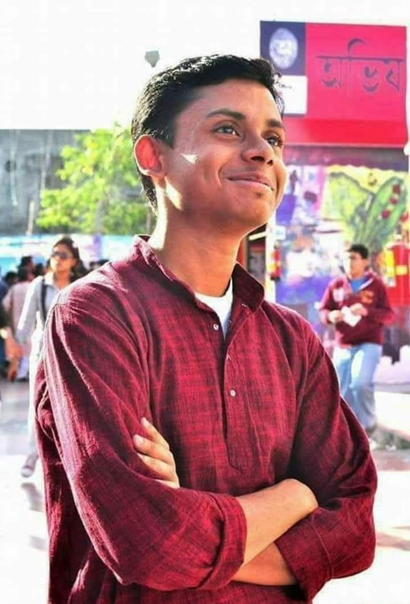
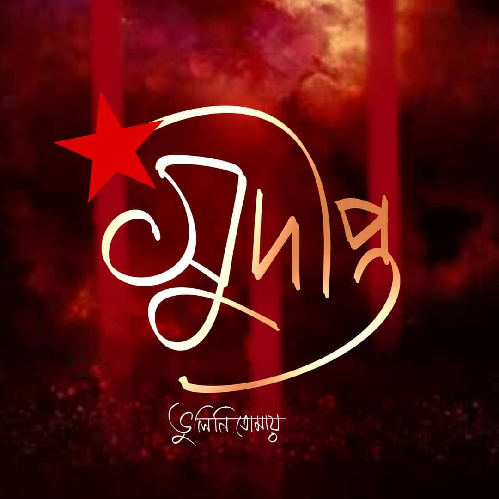

Comrade Sudipto Gupta (1990–2013)
Comrade Sudipto Gupta was the former General Secretary of Netaji Nagar College and a member of the SFI West Bengal State Committee. He was a deeply loved and cherished comrade among us. After losing his mother a few years earlier, he took responsibility for caring for his elderly father with unwavering dedication.
A Political Science Master's degree holder from Rabindra Bharati University, Sudipto sustained himself by giving tuitions, and devoted every breath of his life to SFI until his very last day. A gifted singer and a powerful writer, he was working closely with Comrade Shyamal Chakraborty to document the glorious history of the student movement.
On April 2, 2013, during a massive demonstration demanding campus democracy, Sudipto was arrested along with many comrades. He was brutally assaulted by the police — both at the protest site and inside the police van. The police of the TMC government mercilessly killed the courageous 23-year-old student leader.
The day of his murder remains one of the darkest days in the history of India's student movement. Thousands of student organizations and countless citizens of Kolkata took to the streets in rage and resistance.
Even today, Comrade Sudipto stands as a blazing symbol of the struggle for campus democracy. We, the flag bearers of Comrade Sudipto, holding onto his dream, continue to fight every single day on campus. Sudipto’s oath is our oath — the oath to reclaim student council elections and restore democratic rights.
We shall not stop until the goal is achieved.
সুদীপ্তদার লাশের দোহাই, আমরা আজও লড়ে যাই!
কিছু ছোট ছোট কুঁড়িদের ফোটাবে বলে হাজার হাজার সুদীপ্ত রোজ ফিরে ফিরে আসে।
